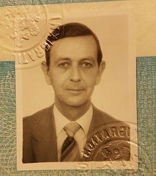

STANLEY John Roger of Northamptonshire, age 88, died 22 March, 2019 at Northampton General Hospital. John R. was born 13 September, 1930 in Aldershot, the son of William Roger Stanley MBE and Florence Nellie Stanley née Wykes.
He spent childhood in Mhow, India and was a graduate of Northampton Grammar School. He joined the Army Cadet Force as a member of the Northampton School Cadet Corps in 1944. Later attached to the Northamptonshire Yeomanry from 1950 to 1953, ending service with the rank of Lance Corporal. Between 1954 and 1965 he resided in Canada, serving in the Canadian Army with 4th Princess Louise Dragoon Guards as an Officer Cadet. He later returned to the UK, joining the British Armed Forces’ Navy, Army and Air Force Institutes (NAAFI). He was stationed in Hong Kong in 1973.
After the NAAFI, he was the manager at the Kowloon Bowling Green Club until 1981. Later that year, he joined the Royal Hong Kong Police with rank of Senior Inspector, as the Area Manager for the forces’ recreational facilities at Wan Chai Gap, Green Island and also the Force Hotel in Shek O. He operated both the old and new Police Officer's Club, facilitating a visit by HRH Princess Alexander’s to Hong Kong in 1986 and Her Royal Highness’ opening of the new club as Honorary Commandant-General of the Royal Hong Kong Police.
He retired to Northampton in 1990. He was very fond of gardening though bemoaned the lack of green fingers! John R. was preceded in death by his parents; his wife, Sau-Wai “Bicky” Stanley née Lam of Hong Kong; his elder sister, Violet “Penny” Florence Rymills née Stanley of Haverhill, Suffolk; and his younger sister, Jean Lillian Cameron née Stanley of North Saanich, BC, Canada. Surviving are his son, Jonathan R. Stanley; daughter-in-law, Erin E. Rehil; and grandson, Tristan E. Stanley-Rehil. A simple graveside service took place at Olney Green Burial Ground, Olney, Bucks at 10am, 18 April, 2019.